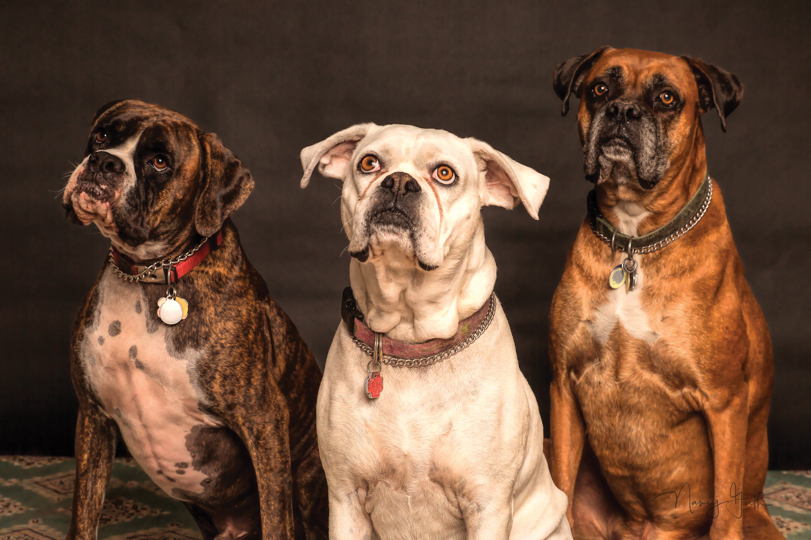

每年春节长假过后，门诊都会有很多自诉焦虑的患者过来咨询，他们自称总感到提不起精神、胃口不好、焦虑、注意力无法集中、睡眠紊乱、满脸油脂和青春痘……自己仿佛得了怪病，久久不能痊愈，非常影响工作和学习，我们一般称之为“节后焦虑”。“节后焦虑”的人群主要集中于青少年群体、中年群体和老年群体，年龄层不同，出现焦虑症的原因也有所不同。对于青少年群体而言，他们的焦虑情绪主要来源于学业压力，尤其是面临毕业考试、升学压力的考生，节日过后容易出现紧张、恐惧的心理。而中年群体则需承受较大的职场压力，节后面临新的工作任务，有的人还可能面临工作岗位的转换、跳槽等职场重大变化。对于老年群体，平日清静惯了的老人，长假中看到儿女带着孙子孙女回家团圆，精神高度兴奋和紧张，生活规律被打乱，身体得不到很好休息。节后儿女离开，老人又回到往日的安静和寂寞生活中，不免心生凄凉，精神无法适应，加之打乱的作息时间和生活规律一时难以恢复，这时老人极易出现各种不适症状，严重的会引发其他身体疾病。这些因素都可能造成个体的心理冲突，诱发节后焦虑情绪。
“节后焦虑”主要表现为精神焦虑、紧张不安、睡眠紊乱等。这主要是因为在假期中，人的身体和情绪已进入休假状态。当假期接近尾声时，意识上又清醒地知道自己即将面临学习和工作，这种身体状态和认知之间的差距，容易导致节后焦虑的出现。“节后焦虑”的核心症状主要包括精神症状和躯体症状。精神上的焦虑主要表现为莫名的紧张、担忧，还会出现自由浮想式焦虑，将一个小问题往消极方向不断夸大，并自认为会产生一种灾难性结果。生活中很多人都会将此误认为是一种常见的焦虑情绪。其实，这种焦虑症的程度比普通焦虑更严重，并对个人正常的社会功能造成较大影响。躯体上的焦虑主要表现在心慌、肌肉疼痛、多汗、尿频尿急、失眠、坐立不安等。对于“节后焦虑”，也不要过度的紧张。有时只是暂时的，根据焦虑症的诊断标准，只有达到一定病程标准的情感焦虑，才算得上真正意义上的精神疾病。但是当一个人如果出现上述两种症状，并影响社会功能时，建议您及时上明心台找医生咨询。

怎样调节“节后焦虑”
1、对老年人群体而言，子女们在节后这段时间要特别关爱老人，儿女上班后也要经常给父母打电话，多与老人进行交流，让老人有一个缓冲的余地，做好充分的心理预备，应提醒老人留意休息。

2、对青少年群体而言，尽快帮助孩子做好开学预备，首先，调整作息时间，做到起居有序。力求早睡早起，拨回紊乱的生物钟。其次，制定计划，做好开学预备。家长要帮助孩子尽快进进学习状态，也可让孩子读些课外书，去书店看看。最后，调整孩子饮食，保证营养均衡。尽量让饮食平淡，多喝水、多吃水果和新鲜绿叶蔬菜。
3.对工作人群而言，克服“节后焦虑”有以下小窍门：

调整心理状态
转移注意力，给自己积极的心理暗示，多畅想一些美好的事情。可写一张便签式的备忘录，将未尽事宜和上班后头几天要办的事情罗列其上，按优先级排序，这样可做到一目了然，心里踏实处事从容。
补充睡眠
长假玩乐过度，甚至通宵饮酒打牌等，打乱了人体正常的生物钟，造成植物神经系统紊乱，结果“睡眠紊乱”就会找上门，可以通过休息或给身体补充营养得到消除，要做到早睡早起，起居有序，要保证有足够的睡眠时间。睡前可以用热水泡脚，按摩足底脚趾对疏通经络、调整脏腑、促进血液循环、增强新陈代谢有重要作用。尤其是对神经衰弱、失眠、头痛等均有疗效或辅助治疗作用。
调节饮食

过年期间吃得油腻，很多人会出现肠胃不适，间接加重躯体不适感，建议节后多吃些易消化的食物，避免过冷、过硬、过辛辣的饮食，减轻肠胃的负担。多吃些新鲜水果、蔬菜和含有丰富蛋白质与维生素的动物肝脏等。每天还应多饮用热茶、活性水或纯净水，适当控制零食，以便缓解身体的疲劳感。
适当运动
运动可以促进中枢神经系统分泌兴奋性递质，缓解躯体的疲劳感，并产生愉悦感，从而有效缓解个体的焦虑情绪。可以做一些有利于身心健康的有氧运动，如散步、慢跑、做体操、伸展、打太极拳等，让自己的身心动起来，出出汗。
向朋友倾诉
倾诉是解决心理焦虑的很好的一种方法，可以把自己内心的想法都表达出来，可以找自己最信任的知己来当倾听者，那么心中的不快和烦恼就会随之消失，这样就可以达到完全放松自己的目的。
转移注意力
当自己感觉到比较心烦的时候，可以通过转移注意力的方法来放松自己，缓解心理压力。可以和朋友一起出去旅游，或者到户外走动，听听音乐，可以是未读完的一本小说，或者是一本感兴趣的杂志，阅读可以让你静下来，渐渐回复到思考的状态。可以是一次整理，把你旅游带回的行李物品、纪念品收拾妥当，把积攒下的脏衣服清理干净，家里整洁的环境可以平复你的焦虑。这些方式都是转移注意力的好方法。

最后，明心台祝您猪年大吉，诸事顺心，幸福快乐！